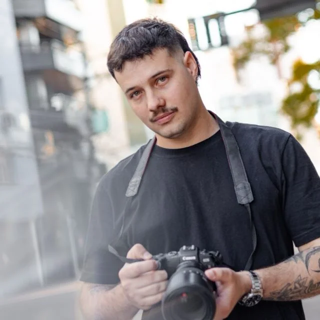

Ensaios
Debutantes, formandos, retratos e ensaios pessoais. Fotos que mostram quem você é, com direção leve para você se sentir à vontade.
Fotógrafo · Passo Fundo, RS
Ensaios, eventos e fotografia esportiva com um olhar atento ao que importa: a emoção de quem está na frente da lente.

Sobre
Sou o Matheus, fotógrafo em Passo Fundo. Trabalho com ensaios, eventos e fotografia esportiva, sempre com a mesma ideia: a imagem final precisa fazer você lembrar de como foi estar ali.
Por isso não me limito a registrar. Converso antes, entendo o que a ocasião significa para você e escolho luz, cenário e enquadramento para contar essa história.
Vamos conversar sobre o seu projetoServiços
Debutantes, formandos, retratos e ensaios pessoais. Fotos que mostram quem você é, com direção leve para você se sentir à vontade.
Formaturas, aniversários, encontros e eventos culturais. Cobertura atenta para não perder nenhum detalhe e nenhuma expressão.
Corridas, jogos e campeonatos da região. As fotos ficam disponíveis na plataforma Fotto para você encontrar a sua.
Portfólio
Fotografia esportiva
Cubro corridas, jogos e campeonatos da região do Planalto Médio. As imagens são publicadas na plataforma Fotto, onde você busca seu nome ou número de peito e escolhe as fotos que quiser.
Como funciona
Você me conta o que tem em mente e a gente alinha data, local e estilo.
Defino luz, cenário e roteiro para aproveitar bem o tempo do ensaio ou do evento.
No dia, direção leve e naturalidade para as fotos saírem com a sua cara.
Tratamento das imagens e entrega para você guardar e compartilhar.
Orçamento
Preencha os campos e o WhatsApp abre com a mensagem pronta. Se preferir, é só chamar direto.
Chamar no WhatsApp